Bevegelse med ikke-konstant akselerasjon
Gjennomsnittsfart \(\bar{v}\) er endring av strekning \(s\),
\[ \bar{v} = \frac{\Delta s}{\Delta t} \;\;\xrightarrow[]{\text{momentanfart når } \Delta t \rightarrow 0}\;\; v(t) = s'(t) \]Gjennomsnittsakselerasjon \(\bar{a}\) er endring av fart \(v\),
\[ \bar{a} = \frac{\Delta v}{\Delta t} \;\;\xrightarrow[]{\text{momentanakselerasjon når } \Delta t \rightarrow 0}\;\; a(t) = v'(t) \]Eksempel
En snøball faller utfor en klippe. Grafen viser farten til snøballen som funksjon av tid.
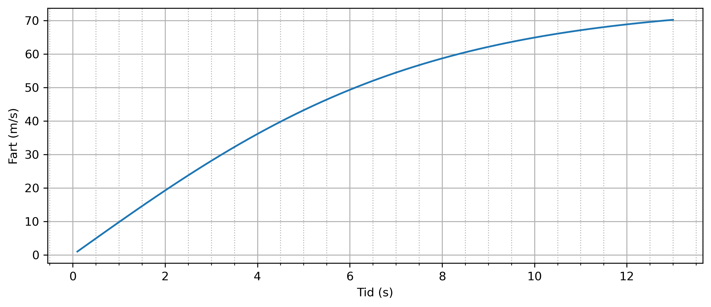
Bestem gjennomsnittsakselerasjonen mellom 2 og 6 sekunder, og bestem den momentane akselerasjonen etter 6 sekunder.
Eksempel
Vi ser på snøballen i forrige eksempel.
Bestem hvor langt snøballen faller i løpet av 10 sekunder.
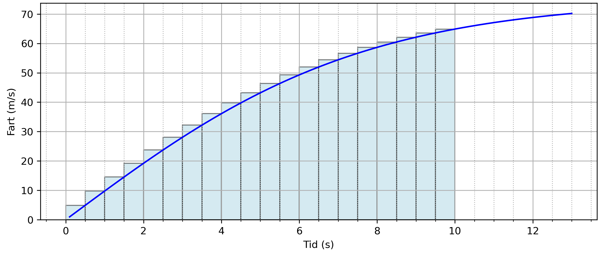
Arealet blir ca. 410 meter.Når vi skal beregne strekningen når akselerasjonen ikke er konstant, slik som i eksempelet over, er det vanlig å bruke programmering. Programkoden nedenfor er "standardkoden" for å beregne dette. I koden har jeg lagt inn det vanlige uttrykket for akselerasjon når det er luftmotstand (men i mange oppgaver i Fysikk 2 må dette uttrykket byttes ut med noe annet).
s, v, t = 0, 0, 0 # Startverdier for strekning, fart og tid
dt = ... # Tidsintervall i beregningene
m = ... # Massen til det som faller
k = ... # Luftmotstandskoeffisient
while ... : # Betingelse for hvor lenge koden skal kjøre
a = 9.81 - k*v**2/m # Uttrykket for akselerasjon med luftmotstand
v = v + a*dt
s = s + v*dt
t = t + dt
print(t, s, v)Bevegelse med konstant akselerasjon
Ved hjelp av derivasjon/antiderivasjon kan vi vise at bevegelseslikningene for konstant akselerasjon er
\[ s = v_0 \cdot t + \frac{1}{2}at^2 \;\;\; \text{ og } \;\;\; v = v_0 + a \cdot t \]Ved hjelp av algebra kan likningene over skrives om til
\[ v^2 - v_0^2 = 2as \;\;\; \text{ og } \;\;\; s = \frac{v_0 + v}{2} \cdot t \]Hvis vi kan se bort fra luftmotstand, er akselerasjonen til noe som faller fritt tyngdeakselerasjonen, som er lik \(9\text{,}81 \text{ m/s}^2\). Når vi ikke har kalkulator, bruker vi tilnærmingsverdien \(10 \text{ m/s}^2\).
Tyngdeakselerasjonen avhenger av massen til jorda, og avstanden til sentrum av jorda. Jorda er ikke en perfekt kule med homogen massefordeling, så egentlig er ikke tyngdeakselerasjonen \(9\text{,}81 \text{ m/s}^2\)overalt på jordoverflaten. Likevel bruker vi \(9\text{,}81 \text{ m/s}^2\) som en standard, eller \(10 \text{ m/s}^2\) når vi ikke har kalkulator.
Eksempel
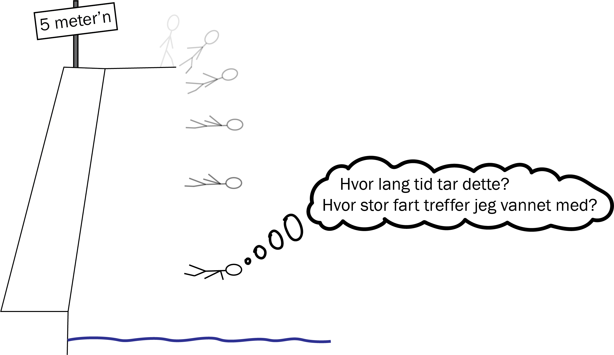
Startfarten er null, så den første bevegelsesligningen gir
\[ \begin{aligned} s &= v_0 \cdot t + \frac{1}{2}at^2 \\ 5 &= 0 \cdot t + \frac{1}{2} \cdot 10 \cdot t^2 \\ t &= \sqrt{\frac{2 \cdot 5}{10}} = 1\text{,}0 \text{ sekunder} \end{aligned} \]Farten kan vi finne ved hjelp av den andre bevegelsesligningen:
\[ \begin{aligned} v &= v_0 + a \cdot t \\ v &= 0 + 10 \cdot 1 = 10 \text{ m/s} \end{aligned} \]Newtons lover i to dimensjoner
Newtons 1. lov: \(\Sigma \vec{F} = \vec{0} \Leftrightarrow \vec{v} = \text{konstant}\)
For å skjønne Newtons lov, kan det være nyttig å tenke at det å være i ro, egentlig er det samme som å bevege seg med konstant fart; Om du er i ro, eller har konstant fart, avhenger bare av hvor noen ser deg fra.
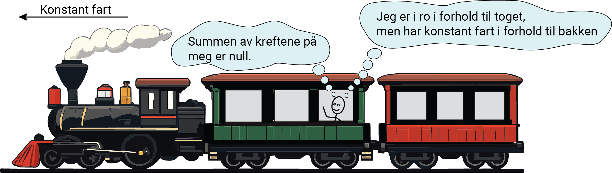
Newtons 1. lov sier at en kraft er noe som kan endre farten din. Newtons 2. lov sier hvordan kraften endrer farten din.
Newtons 2. lov: \(\Sigma \vec{F} = m\vec{a}\)
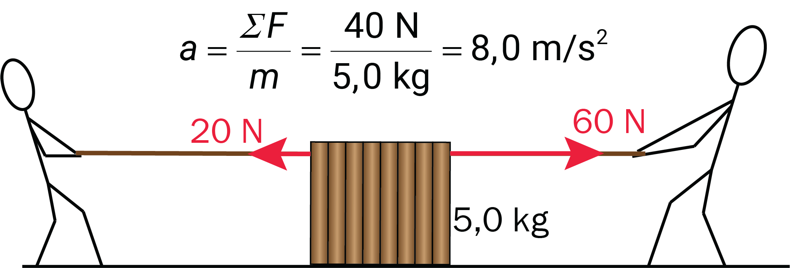
Newtons 3. lov: \(\vec{F} = -\vec{F}^{*}\)
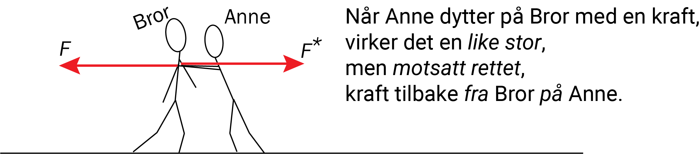
I Fysikk 2 jobber vi med krefter i to dimensjoner. Vi må da bruke dekomponering av krefter; Vi deler opp krefter i \(x\)- og \(y\)-retning.
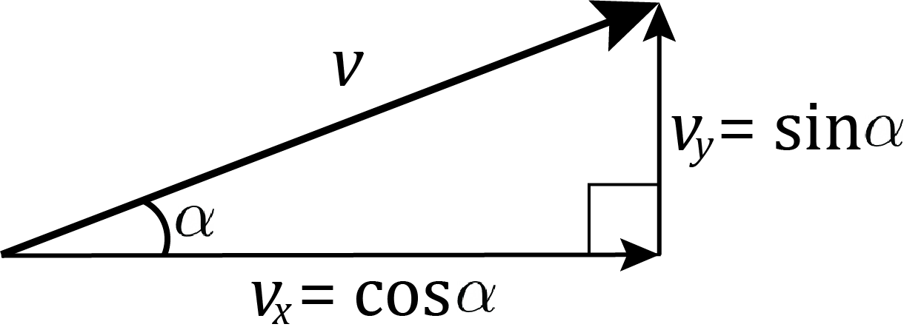
Eksempel
Figuren viser en båt sett ovenfra. Det virker 3 horisontale krefter (sidevind, motorkraft og vannmotstand).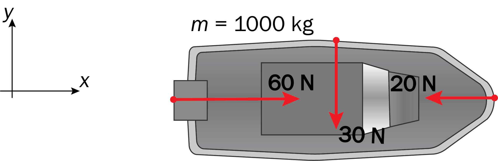
Bestem akselerasjonen til båten.
Når noe henger i ro
Tyngdekraft: \(G = mg\)
Generelt er tyngdeakselerasjonen rundt en planet (eller måne) gitt ved \[ g = 6\text{,}67 \cdot 10^{-11} \cdot \frac{M}{r^2} \;\;,\;\; \text{ hvor \(M\) er planetens masse og \(r\) avstanden til planetens sentrum.} \] Dette kommer vi tilbake til i kapittelet om gravitasjon.
Når vi regner på noe som henger i ro, bruker vi at summen av krefter både i \(x\)- og \(y\)-retning må være null.
Eksempel
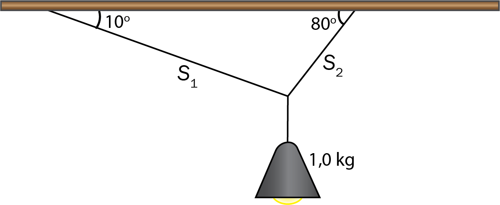
Bestem snordragene til de to snorene lampa henger i.
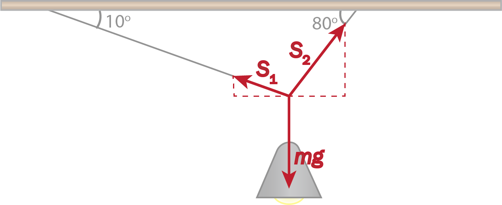
Lampa henger i ro, så summen av kreftene må være null, både i \(x\)- og \(y\)-retning.Komponentene i \(x\)-retning må da være gitt ved \[ S_1 \cdot \cos 10^{\text{o}} = S_2 \cdot \cos 80^{\text{o}}\]
Tyngdekraften er \(mg = 1\text{,}0 \cdot 9\text{,}81 = 9\text{,}81 \text{ N} \).
Komponentene i \(y\)-retning må da være gitt ved \[ S_1 \cdot \sin 10^{\text{o}} + S_2 \cdot \sin 80^{\text{o}} = mg \] Vi løser likningssettet (med litt algebrakadabra) og får \[ S_1 = \frac{mg}{\sin 10^{\text{o}} + \cos 10^{\text{o}} \cdot \tan 80^{\text{o}} } = 1\text{,}7 \text{ N} \;\;\text{ og }\;\;S_2 = \frac{S_1 \cdot \cos 10^{\text{o}}}{\cos 80^{\text{o}}} = 9\text{,}7 \text{ N}\]Skråplan
Når vi regner på bevegelse på skråplan, er det (nesten alltid) lurt å lage et koordinatsystem hvor \(x\)-retning er nedover langs skråplanet, i bevegelsesretningen. Vi må da dekomponere gravitasjonen slik:
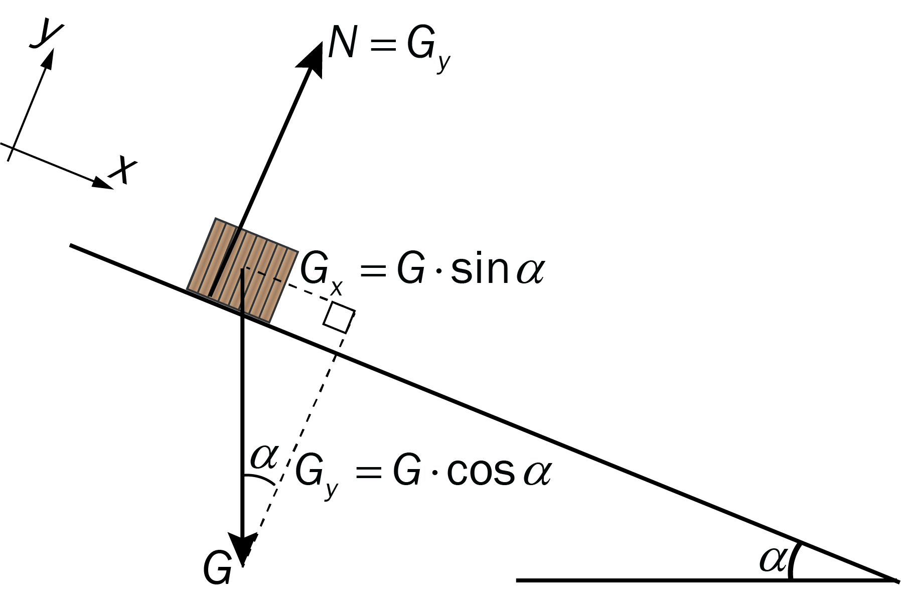
Eksempel
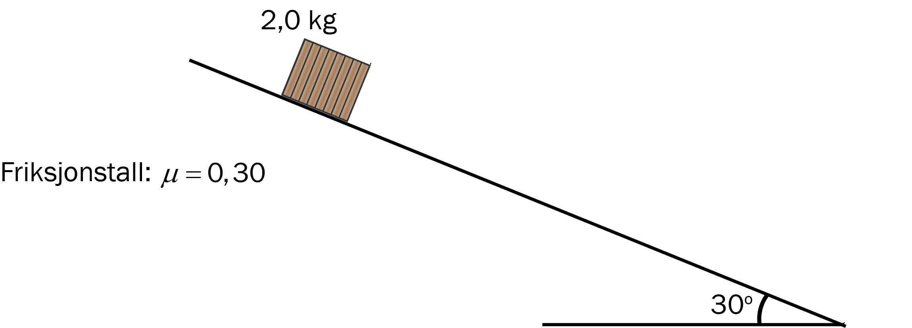
Bestem akselerasjonen til kassa når den glir nedover skråplanet.
Eksempel
Vi ser fortsatt på kassa i forrige eksempel, men vi tenker oss at den har fått en startfart i bunnen av skråplanet, og glir oppover.
Bestem akselerasjonen til kassa.
Skrått kast
Bevegelseslikningene i to dimensjoner, som beskriver skrått kast (uten luftmotstand), er
\[ \vec{r}(t) = [x(t), y(t)] = \left[ v_{0x} \cdot t \;,\;\; h_0 + v_{0y}\cdot t - \frac{1}{2} gt^2 \right] \;\;\; \text{ og }\;\;\; \vec{v}(t) = \left[ v_{0x} \;,\;\; v_{0y}- gt \right] \]hvor startfarten i \(x\)- og \(y\)-retning er \(v_{0x} = v_0 \cdot \cos \alpha\) og \(v_{0y} = v_0 \cdot \sin \alpha\).
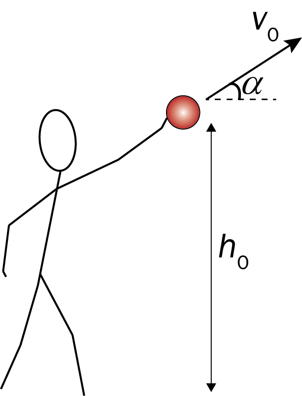
Simuleringen nedenfor viser hvordan bevegelseslikningene over gir at noe beveger seg når det kastes på skrå.
Tid: 0.00 s
Hastighet: 3.00 m/s
Høyde: 1.50 m
Strekning: 0.00 m
Eksempel
En gjenstand kastes fra en starthøyde 1,5 meter over bakken. Startfarten på 2,9 m/s danner en vinkel \(\alpha=30^{\text{o}}\) med horisontalen.
Bestem lengden på kastet.
Hvis vi skal ta hensyn til luftmotstand i skrått kast, må vi bruke at luftmotstanden hele tiden virker i motsatt retning av farten:
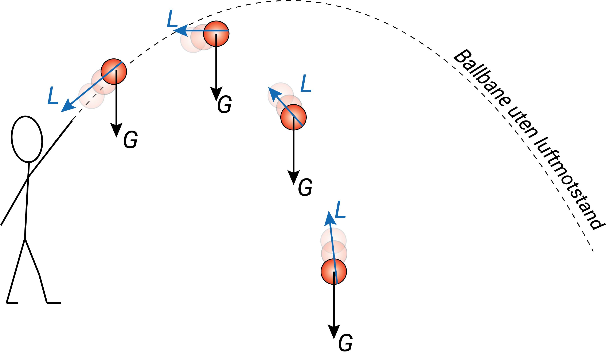
For å gjøre beregninger med dette må vi regne numerisk (programmere), fordi vi må dele opp beregningene i små tidssteg, og vi må gjøre beregninger både i \(x\)- og \(y\)-retning. Programkoden for dette blir omtrent som programkoden i fritt fall i én dimensjon. Programkoden nedenfor beregner tiden og lengden i eksempelet over når vi tar hensyn til luftmotstand, og når gjenstanden er en skumgummiball (sånn som man bruker i kanonball i gymtimene).
from math import sqrt
x, y, vx, vy, t = 0, 1.5, 2.51, 1.45, 0
dt = 0.001
m, k = 0.080, 0.060 # Masse og luftmotstandskoeffisient for en skumgummiball
while y > 0:
v = sqrt(vx**2 + vy**2) # Bruker pytagoras for å beregne farten
ax, ay = -k*vx*v/m, -k*vy*v/m - 9.81 # Akselerasjon i x- og y-retning
vx, vy = vx + ax*dt, vy + ay*dt
x, y = x + vx*dt, y + vy*dt
t = t + dt
print(t, x) # Skriver ut hvor lenge ballen er i lufta, og hvor langt den kommerMekanisk energi
Mekanisk energi er summen av kinetisk og potensiell energi: \( E_{\text{mek.}} = \frac{1}{2} mv^2 + mgh \)
Bevaring av mekanisk energi: Når ikke det virker friksjon eller luftmotstand er den mekaniske energien bevart:
\[ \frac{1}{2} mv_0^2 + mgh_0 = \frac{1}{2} mv^2 + mgh \]Eksempel
En skater ruller gjennom en bane, som vist i figuren nedenfor.
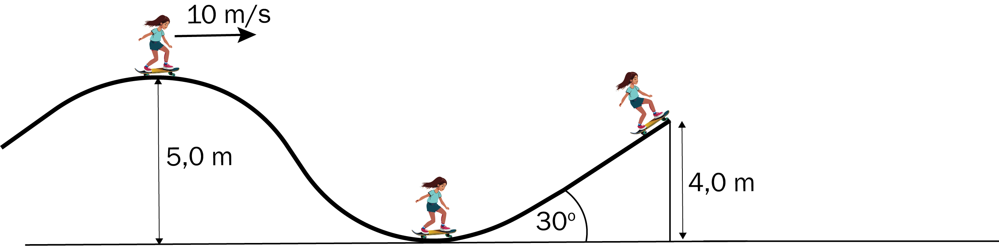
Hvor stor fart har hun på toppen av skråplanet? Se bort fra friksjon og luftmotstand.
Horisontal sirkelbevegelse
Sentripetalakselerasjon: Når et objekt beveger seg med konstant fart i en sirkelbevegelse, så akselererer det mot sentrum av sirkelen med sentripetalakselerasjonen (sentripetal betyr "sentersøkende"), som er gitt ved
\[ a = \frac{v^2}{r} , \;\;\text{ hvor \(v\) er banefarten og \(r\) er baneradien.} \]MERK: Det er ganske enkelt å utlede uttrykket for sentripetalakselerasjonen ved hjelp av vektorregning og derivasjon, men dette er mer matematikk enn fysikk, så jeg gjør ikke det her.
Simuleringen nedenfor viser sammenhengen mellom sentripetalakselerasjonen (rød vektor) og farten (grønn vektor) i en sirkel med radius på 1,0 meter. Siden akselerasjonen (og kraften) står 90° på farten, gjør ikke kraften noe arbeid; Størrelsen til farten endrer seg ikke, men retningen endrer seg.
Eksempel
Månen går i en sirkelbane med radius 384 000 km rundt jorda, og den bruker 27,3 døgn på et omløp.
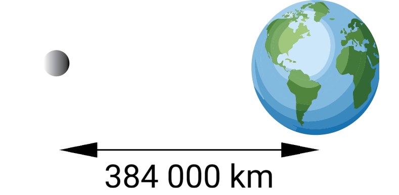
Bestem banefarten, vinkelfarten og sentripetalakselerasjonen til månen.
(Du må se på den på samme tidspunkt fordi jorda roterer...)
Eksempel
En bil med masse 2000 kg kjører med farten 20 m/s gjennom en sving.
Svingen er en del av en horisontal sirkel med radius 70 meter.
Bestem friksjonskraften mellom dekkene og veien.
Eksempel
Friksjonstallet mellom dekkene og underlaget til bilen i eksempelet over, er \(\mu\) = 0,90.
Hvor fort kan bilen kjøre gjennom svingen uten å gli?
Dosserte svinger
Når fly svinger føles det som om man kjører rett fram; Dette kommer av at svingradien, farten og helningsvinkelen er tilpasset til hverandre.
Når en bil kjører gjennom en dossert sving, dytter normalkraften bilen delvis inn mot sentrum. Hvis farten er akkurat passe stor, er det derfor mulig å kjøre gjennom en sving uten at friksjonskraften trenger å dytte bilen inn mot sentrum. Vi får da samme effekt som når et fly svinger; Det føles som om vi kjører rett fram.
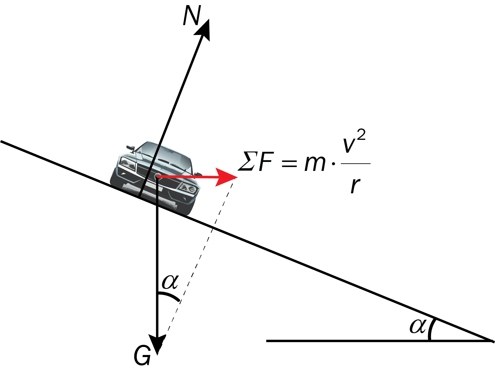
Eksempel
En bil med masse 2000 kg kjører gjennom en dossert sving som er en del av en horisontal sirkel med radius 10 meter. Dosseringsvinkelen i svingen er 30°.
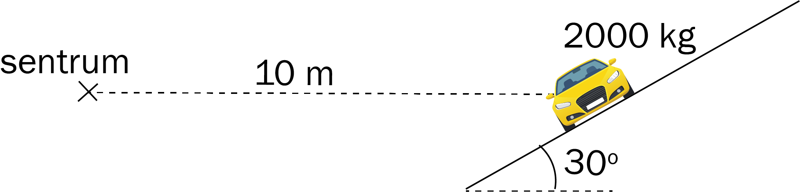
Hvor fort må bilen kjøre hvis ikke det skal virke sideveis friksjon mellom dekkene og veien?
Hvor stor er da normalkraften?
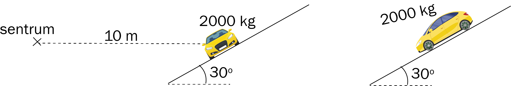
En vesentlig forskjell på situasjonene er at normalkraften er større enn tyngdekraften i en dossert sving, mens normalkraften er mindre enn tyngdekraften på et skråplan.Eksempel
En syklist sykler gjennom en sving med radius 75 meter. Syklisten svinger ikke med styret, men lener seg til siden slik at hun følger svingen. Vinkelen mellom horisontalen og syklisten er 70°. Den samlede massen til syklisten og sykkelen er 68 kg.
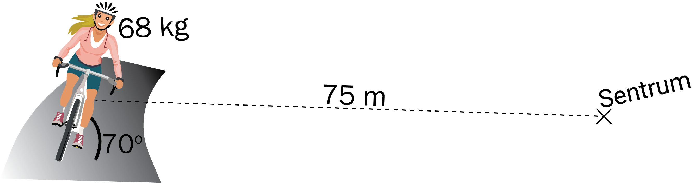
Hvor stor er friksjonskraften mellom dekkene og veien?
Vertikal sirkelbevegelse
Når vi jobber med vertikal sirkelbevegelse er det lurt å dekomponere kreftene i en komponent mot sentrum og en komponent i fartsretningen. Summen av komponentene mot sentrum, er lik uttrykket for sentripetalkraft:
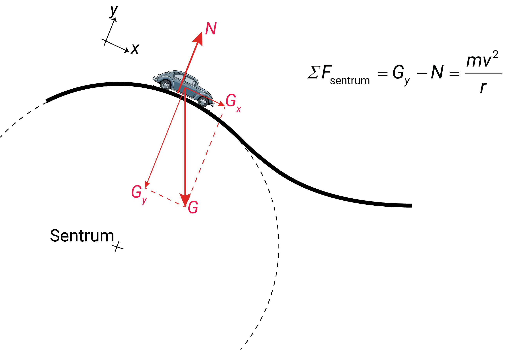
Figuren nedenfor viser sammenhengen mellom kreftene \(G\) og \(N\), og uttrykket for sentripetalkraft, på ulike steder i en vertikal sirkel.
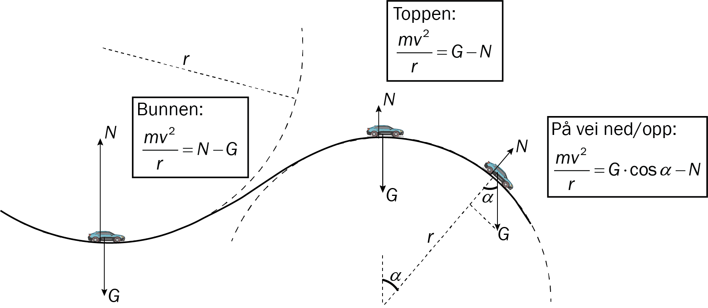
Eksempel
Se på figuren over. Bilen har masse 1000 kg og kjører med en konstant fart. Radien i sirklene er 100 m. Når vinkelen \(\alpha = 30°\) mister bilen kontakten med underlaget.
Bestem farten til bilen, og bestem normalkraften nederst i dumpen og over bakketoppen.
Eksempel
En ape med masse 12 kg starter i ro, og svinger seg i en liane med lengde 5,0 meter, fra toppen av et tre 6,0 meter over bakken.
Det laveste punktet i banen er 1,0 meter over bakken.
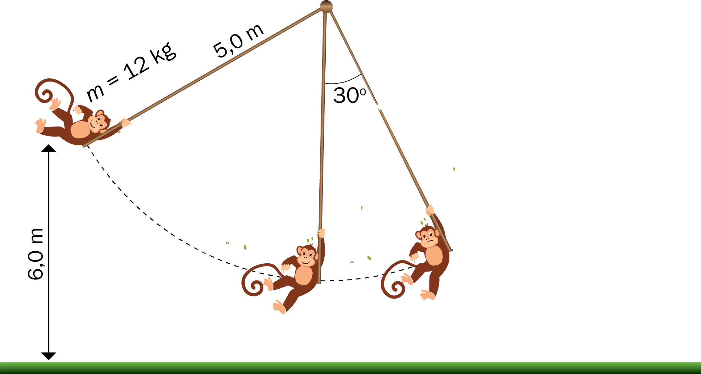
Når vinkelen mellom lianen og loddlinjen er 30°, ryker lianen. Se bort fra friksjon og luftmotstand.
Hvor stort var snordraget i lianen like før den røk?
Trigonometri gir at høyden til apen når lianen ryker, er \[ h = 1\text{,}0 + \left( 5\text{,}0 - 5\text{,}0 \cos 30° \right) = 1\text{,}670 \text{ m} \] Bevaring av mekanisk energi gir farten like før lianen ryker: \[\begin{align} \frac{1}{2}mv_0^2 + mgh_0 &= \frac{1}{2}mv^2 + mgh \\[8pt] v &= \sqrt{2g(h_0 - h)} = \sqrt{2 \cdot 9\text{,}81 \cdot \left(6\text{,}0 - 1\text{,}670\right)} = 9\text{,}217 \text{ m/s} \end{align} \] Snordraget \(S\) er dermed \[ S = \frac{mv^2}{r} + mg \cdot \cos 30° =\frac{12 \cdot 9\text{,}217^2}{5\text{,}0} + 12 \cdot 9\text{,}81 \cdot \cos 30° = 306 \text{ N} \]
Eksempel
En person skal sykle gjennom en vertikal loop med radius 10 m. I bunnen av loopen har syklisten farten 30 m/s.
Massen til syklisten og sykkelen er 70 kg.
Hvor mye mekanisk energi mister syklisten hvis hun så vidt ikke mister kontakt med underlaget i toppen av loopen?
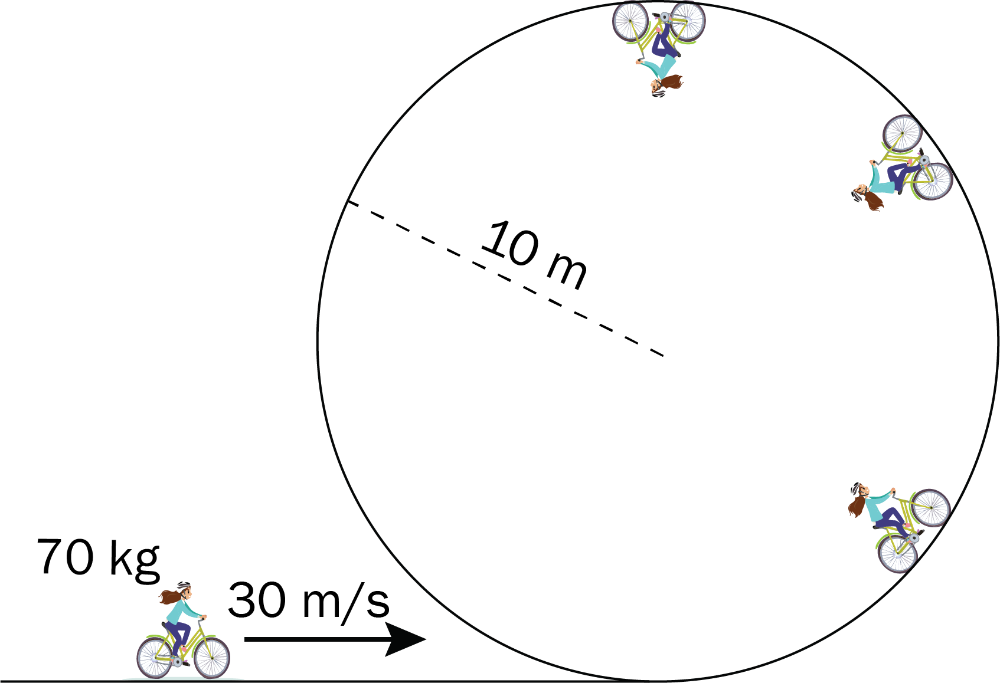
Vi finner farten som gjør at normalkraften er null på toppen av loopen (som vil si at hun så vidt klarer å holde kontakten med underlaget): \[ \Sigma F_{\text{toppen}} = \frac{mv^2}{r} = G + N \;\;\; \xrightarrow{N = 0} \;\;\; v = \sqrt{gr} = \sqrt{10 \cdot 10} = 10 \text{ m/s} \] Siden høydeforskjellen mellom bunnen og toppen av loopen er 20 m, blir den mekaniske energien på toppen \[ E_{\text{topp}} = \frac{1}{2}mv^2 + mgh = \frac{1}{2}\cdot 70 \cdot 10^2 + 70 \cdot 10 \cdot 20 = 3500 + 14\,000 = 17\,500 \text{ J} = 17\text{,}5 \text{ kJ} \] I bunnen var den mekaniske energien \[ E_{\text{bunn}} = \frac{1}{2}mv_0^2 = \frac{1}{2}\cdot 70 \cdot 30^2 = 31\,500 \text{ J} = 31\text{,}5 \text{ kJ} \] Tapet av mekanisk energi blir dermed \[ E_{\text{tap}} = E_{\text{bunn}} - E_{\text{topp}} = 31\text{,}5 \text{ kJ} - 17\text{,}5 \text{ kJ} = 14 \text{ kJ} \] Altså har hun mistet 14 kJ mekanisk energi på grunn av friksjon og luftmotstand.